How to use the Batch Controller Page
Below is a screenshot of the interface for the Batch Controller page. The page can be accessed directly by navigating to http://key/it/newbatch/.
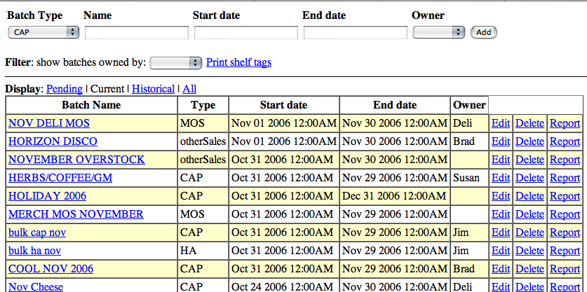
Definitions:
Batch Type - Type of batch (CAP, Member only special [MOS], price change, etc).
Name - Name for batch. Typically set to something recognizable (e.g. CAP GROC Dec 2006, for December 2006 Grocery CAP batch).
Start date - Date for the start of the batch
End date - Date for the end of the batch.
Owner - Buyer or department creating the batch.
Filter - Filter batches by their owner
Current - Batches that are currently running sales in the POS
Pending - Batches that are scheduled for some date in the future
Historical - Batches that have ended.
To start a new batch
Select the Batch Type.
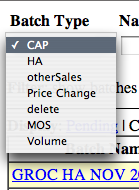
Once you have selected a batch type, enter a name for the batch. Placing your cursor in the 'Start date' and 'End date' fields will popup calendars to select the start and end dates of the batch.
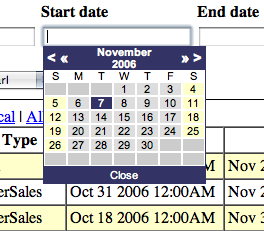
Lastly, select an Owner for the report. It is not necessary to enter an owner, but by doing so, you will be able to filter this batch, by selecting this owner.
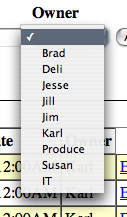
Click 'Add' to add this batch to the batch list. Note: if the batch date is set for the future, it will not show under 'Current' batches, but under 'Pending' batches.
The batch list display
The first thing to note in the batch list display is that there are several options for viewing the batchlist. The default view is to show 'Current' batches. The view can be changed to show Pending batches, Historical batches or All batches, but selecting the appropriate Display link.
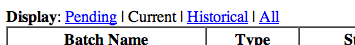
Editing batch information
To edit basic information for a batch such as its name, start/end date, owner, etc., Click 'Edit' on the line for the batch in question.
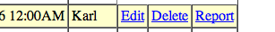
This will open all the fields for that batch for editing and change the 'Edit' link to 'Save'. Once your edits have been made, click 'Save' and the batch information will be updated.
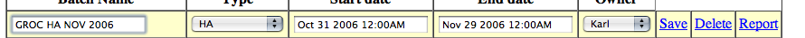
Deleting a batch
To delete a batch, click the 'Delete' link for the batch.
You will be asked to confirm that you indeed do want to delete the batch.
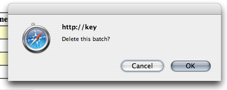
Displaying a Movement Report for a batch
Clicking the 'Report' link will display the sales history for the items in the batch during the sale period defined by the start and end dates of the batch.
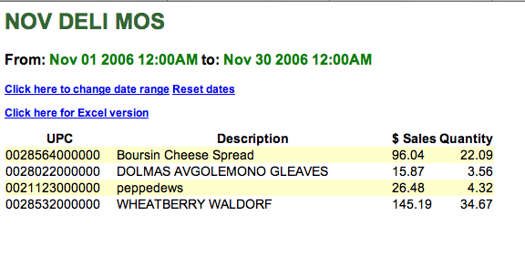
You will notice here that you have the option of changing the date range for the products in the sales batch movement report. This is useful when you wish to see how these products moved during a period within the sales batch time frame (for example, over the last weekend) or even for a period outside the batch dates (for example, you are looking to see how this product sold the month before the sales batch and the month after). The displayed report can also be dumped to an Excel file using the 'Click here for Excel version' link.
Editing items in a batch
Once a batch has been created, items can be added/subtracted from a batch by clicking the link that is the name of the batch. This will load the item maintenance interface to the batch controller.
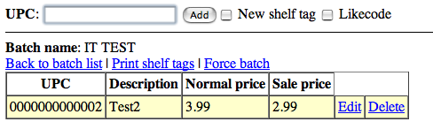
Entering a upc and clicking 'Add' (or pressing [Enter]) will pull preliminary information (description and current price) about the item.
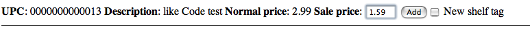
A Sale price field will appear at this point, as well. Enter the sale price for the item and click 'Add' or press [Enter] and the item will be added to the list of items in the sales batch.
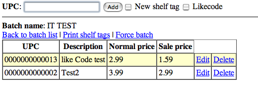
To edit the sale price for an item already in a sales batch, click 'Edit', edit the sale price and click 'Save' and the price will be changed within the sales batch.
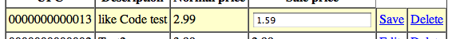
To delete an item a batch, click 'Delete'. This will remove the item from the batch.
Adding like codes to batches
Like codes can be used in batches in addition to items. To enter the items in a like code, select 'Like Code'. This switches to a like code entry form. If you know the like code that you want, you can simply enter it in the left box. Otherwise, select it from the drop down list. To go back to the regular entry form, uncheck 'Like Code'.
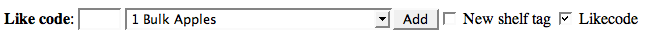
This will load a review showing the like code description and price information for that like code.
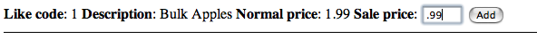
Upon adding this item to the batch you will now see a description of 'LC' plus the like code ID number listed in the item list.
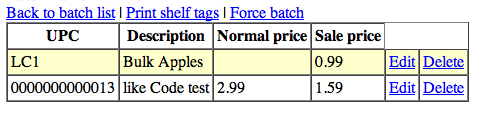
Like codes in the batch item list can be edited and deleted like items (see above: Editing items in a batch)
Shelf Tags
Shelf tags are incorporated directly into the batch page. To create a new shelf tag for an item, check the 'New shelf tag" checkbox. This will automatically maintain the same setting while items are being entered.
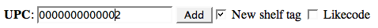Adding an item with a new shelf tag brings up an additional entry form for shelf tag specific information. 'Add' will add the item to the batch and create a new shelf tag. 'Cancel' will go back without adding the item or creating a shelf tag.
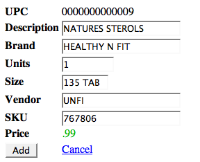There are two ways to print shelf tags. When viewing a single batch, click 'Print Shelf Tags'.
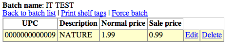Alternately, to get shelf tags from multiple batches at once, click the 'Print Shelf Tags' link on the list of all batches.
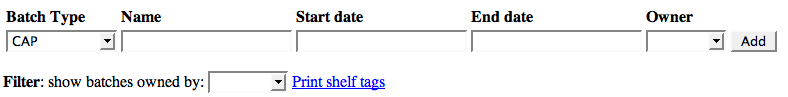A list of all batches that have shelf tags is presented. Select as many as desired, then click 'Print'
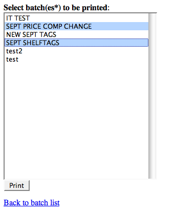